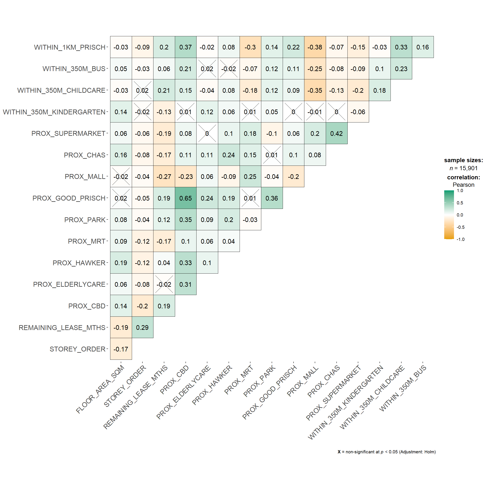
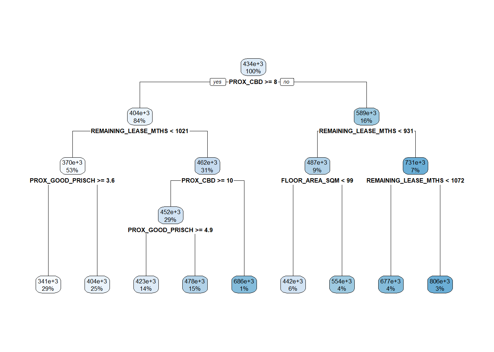
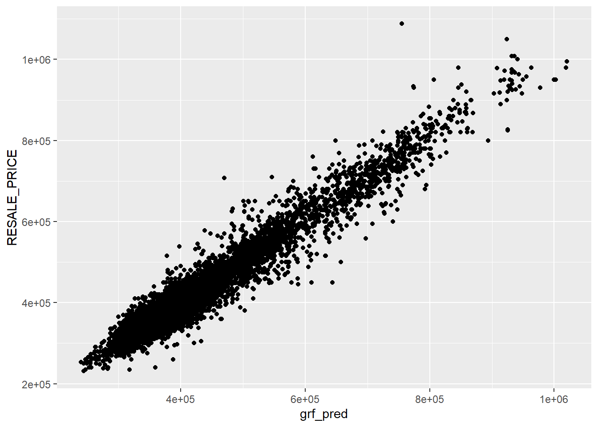

In-class Exercise 9: Geographical Segmentation with Spatially Constrained Clustering Techniques
Overview
Geographically weighted regression (GWR) is a spatial statistical technique that takes non-stationary variables into consideration (e.g., climate; demographic factors; physical environment characteristics) and models the local relationships between these independent variables and an outcome of interest (also known as dependent variable). In this hands-on exercise, we will learn how to build hedonic pricing models by using GWR methods. The dependent variable is the resale prices of condominium in 2015. The independent variables are divided into either structural and locational.
Packages
- olsrr for building OLS and performing diagnostic tests
- GWmodel for calibrating geographical weighted family of models. GWmodel provides a collection of localised spatial statistical methods, namely: GW summary statistics, GW principal components analysis, GW discriminant analysis and various forms of GW regression. Commonly, outputs or parameters of the GWmodel are mapped to provide a useful exploratory tool, which can often precede (and direct) a more traditional or sophisticated statistical analysis
- corrplot for multivariate data visualisation and analysis
- sf for Spatial data handling -. tidyverse for Attribute data handling, especially readr, ggplot2 and dplyr
- tmap for Choropleth mapping
Use this code chunk to load the packages
Data
Next, the code chunk below is used to reveal the properties of rs_sf object.
| Characteristic | Beta | 95% CI1 | p-value |
|---|---|---|---|
| (Intercept) | 105,360 | 81,898, 128,823 | <0.001 |
| FLOOR_AREA_SQM | 2,803 | 2,601, 3,005 | <0.001 |
| STOREY_ORDER | 14,044 | 13,292, 14,796 | <0.001 |
| REMAINING_LEASE_MTHS | 345 | 335, 355 | <0.001 |
| PROX_CBD | -17,918 | -18,434, -17,403 | <0.001 |
| PROX_ELDERLYCARE | -14,469 | -16,672, -12,265 | <0.001 |
| PROX_HAWKER | -17,101 | -19,961, -14,240 | <0.001 |
| PROX_MRT | -31,603 | -35,448, -27,758 | <0.001 |
| PROX_PARK | -9,334 | -12,677, -5,992 | <0.001 |
| PROX_GOOD_PRISCH | 2,787 | 2,036, 3,539 | <0.001 |
| PROX_MALL | -12,320 | -16,777, -7,863 | <0.001 |
| PROX_CHAS | -9,057 | -23,168, 5,054 | 0.2 |
| PROX_SUPERMARKET | -25,758 | -35,671, -15,845 | <0.001 |
| WITHIN_350M_KINDERGARTEN | 8,707 | 7,297, 10,117 | <0.001 |
| WITHIN_350M_CHILDCARE | -4,537 | -5,317, -3,756 | <0.001 |
| WITHIN_350M_BUS | 1,067 | 573, 1,562 | <0.001 |
| WITHIN_1KM_PRISCH | -8,192 | -9,277, -7,108 | <0.001 |
| R² = 0.742; Adjusted R² = 0.742; AIC = 197,736; Statistic = 1,428; p-value = <0.001; σ = 60,847 | |||
| 1 CI = Confidence Interval | |||
Revising mlr model
n= 7950
node), split, n, deviance, yval
* denotes terminal node
1) root 7950 1.139546e+14 433705.6
2) PROX_CBD>=7.974483 6665 4.472144e+13 403736.0
4) REMAINING_LEASE_MTHS< 1020.5 4228 1.573100e+13 370187.4
8) PROX_GOOD_PRISCH>=3.629405 2271 3.851141e+12 340796.1 *
9) PROX_GOOD_PRISCH< 3.629405 1957 7.641480e+12 404294.6 *
5) REMAINING_LEASE_MTHS>=1020.5 2437 1.597594e+13 461940.1
10) PROX_CBD>=10.40657 2331 9.762718e+12 451754.4
20) PROX_GOOD_PRISCH>=4.866983 1123 2.801796e+12 423493.8 *
21) PROX_GOOD_PRISCH< 4.866983 1208 5.230246e+12 478026.4 *
11) PROX_CBD< 10.40657 106 6.532500e+11 685929.1 *
3) PROX_CBD< 7.974483 1285 3.219685e+13 589151.4
6) REMAINING_LEASE_MTHS< 930.5 745 6.613365e+12 486637.6
12) FLOOR_AREA_SQM< 98.5 451 2.446537e+12 442460.5 *
13) FLOOR_AREA_SQM>=98.5 294 1.936449e+12 554405.7 *
7) REMAINING_LEASE_MTHS>=930.5 540 6.952722e+12 730582.5
14) REMAINING_LEASE_MTHS< 1071.5 314 2.461969e+12 676641.3 *
15) REMAINING_LEASE_MTHS>=1071.5 226 2.307737e+12 805527.4 *
Ranger result
Call:
ranger(RESALE_PRICE ~ ., train_df, importance = "impurity")
Type: Regression
Number of trees: 500
Sample size: 7950
Number of independent variables: 15
Mtry: 3
Target node size: 5
Variable importance mode: impurity
Splitrule: variance
OOB prediction error (MSE): 738005688
R squared (OOB): 0.9485198 
# A tibble: 1 × 3
.metric .estimator .estimate
<chr> <chr> <dbl>
1 rmse standard 61617.